for the smaXtec animal care GmbH
Overview
smaXtec
Motivation
Related Work
The Simulator
Scope & Measures of Success
Experiments
Conclusion
smaXtec
smaXtec
- Real-Time health monitoting for cows
- Bolus measures data inside the cow
- Temperature
- Activity
- ph-Value (stomach acid)
- Calculation of health-specifc metrics
- Diseases
- Calving alerts
- Waterintake
- Notifies the customer
Motivation
Motivation
- Increase customer satisfaction
- Reduce downtimes
- Resolve incidents faster
- Enabling growth
- Simulating expected future load
Related Work
Source: Z. M. J. Jiang, “Load testing large-scale software systems"
Simulator
Scope & Measures of Success
Goals
- Replication of live ingress
- Simulations foucs on ingress only
- Why?
- Ingress is system-critical
- Processable work volume defined by ingress
- Scaling requires some effort
Measures of Success
- Similarity to live-system under same load
- Realistic metrics behavior under lower load
- Reproduction of past system failures Important Metrics:
- kilo-bytes/sec on ingress_chirpstack
- Request/Response times between App- and Networkserver (gPRC)
- Components CPU utilization
Experiments
Simulating Approach
- Live System (340.000 - 360.000 uplinks per hour)
- roughly 170.000 - 180.000 devices
- Bolus sends 2 uplinks per hour
- Simulator (240.000 - 384.000 uplinks per hour)
- 10 - 16 Sensor-Simulator-Instances
- 100 devices per instance
- 15 sec uplink interval
- Simulation Time: 10 min
- Comparison with the live system
Simulating Approach
- Same resource allocation as live:
- Chirpstack
- MQTT
- DefaultPartitioner
- Redis
- Different resource allocation as live:
- Postgres
- Kafka
- PacketParser
Experiment 1
- Tested Measure: Similarity to live-system under same load
- 336.000 uplinks/hour -> 80 kbytes/sec on topic_ingress_chirpstack
- Simulation Time: 10 min
- Important Metrics:
- kbytes/sec on topic_ingress_chirpstack
- CPU uitilization App- & Networkserver
- gRPC call times between App- & Networkserver
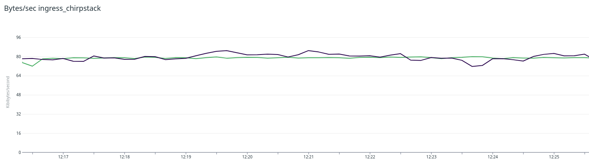
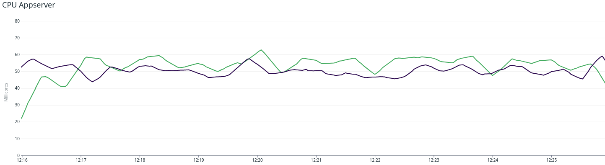
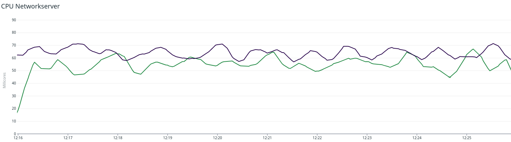
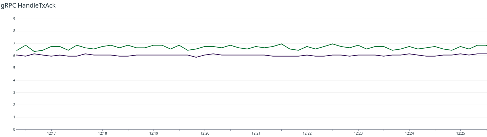
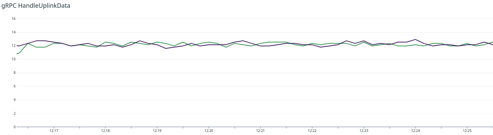
Experiment 1 - Observations
- Load was stable at 80 kbytes/sec
- Appserver CPU: 5 to 10 milicores higher
- Networkserver CPU: 5 to 10 milicores lower
- gRPC calles took 1 ms longer
- CPU from other component: No seen differences
Experiment 2
- Tested Measure: Realistic Metrics behavior under lower load
- 240.000 upinlks/hour -> 57 kbytes/sec on ingress_chirpstack
- Simulation Time: 10 min
- Important Metrics:
- kbytes/sec on topic_ingress_chirpstack
- CPU uitilization App- & Networkserver
- gRPC call times between App- & Networkserver
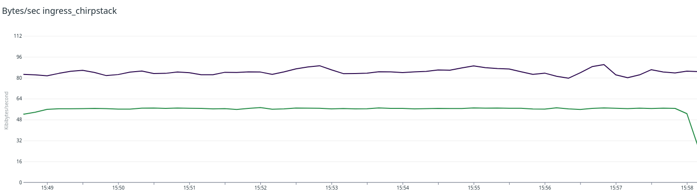
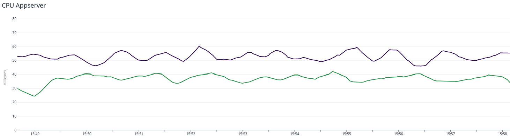
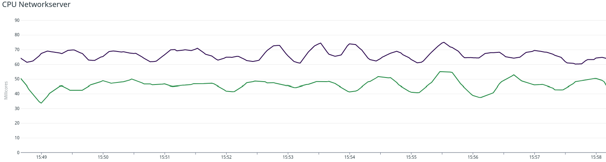
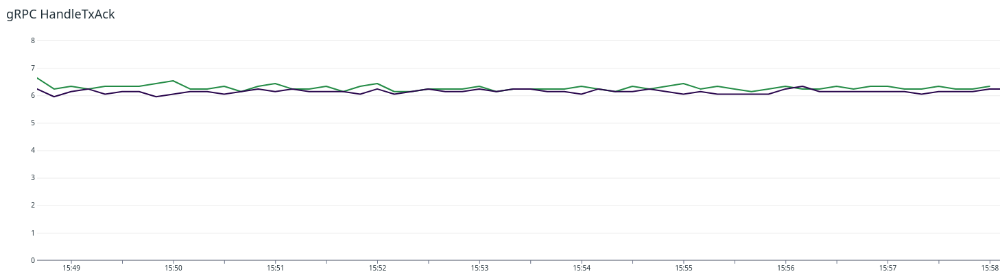
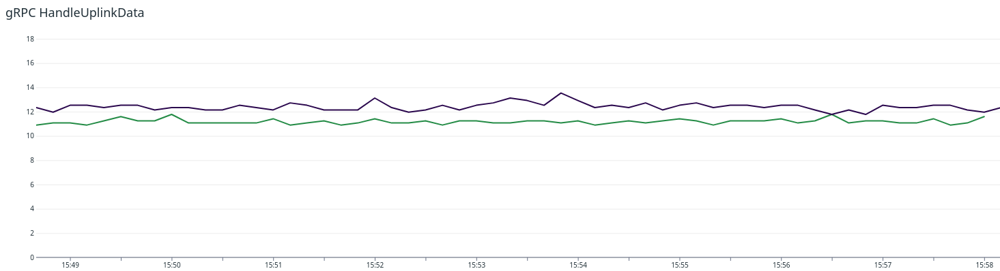
Experiment 2 - Observations
- Load was stable at 57 kbytes/sec
- All Components show a lower CPU uitilization
- gRPC calls took 1 ms less
Experiment 3
- Tested Measure: Similarity to live-system under same load
- 384.000 uplinks/hour -> 90 kbytes/sec on ingress_chirpstack
- Simulation Time: 10 min
- max_idle_connection=2
- Important Metrics:
- grpc-call times between App- & Networkserver
- Number of Dropped Packets by PacketParser
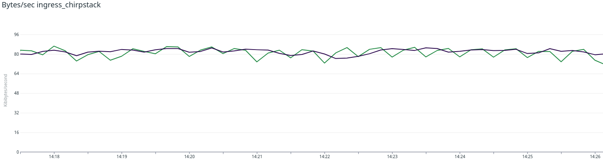
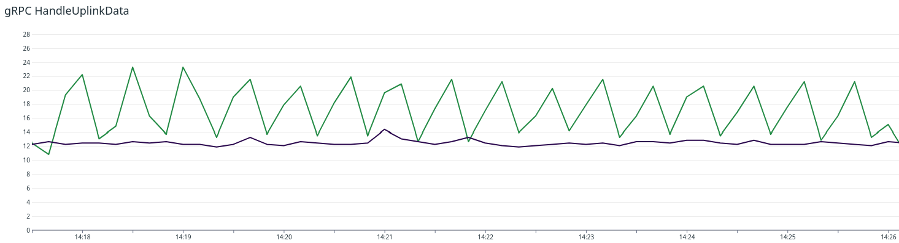
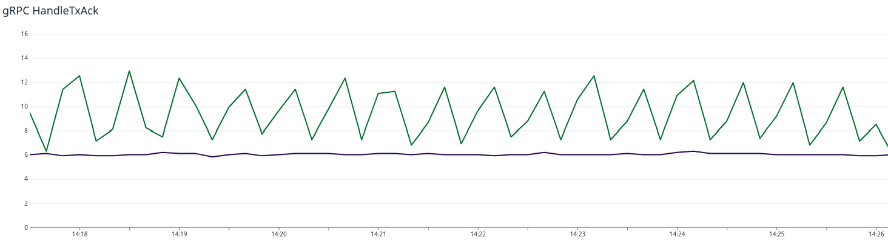
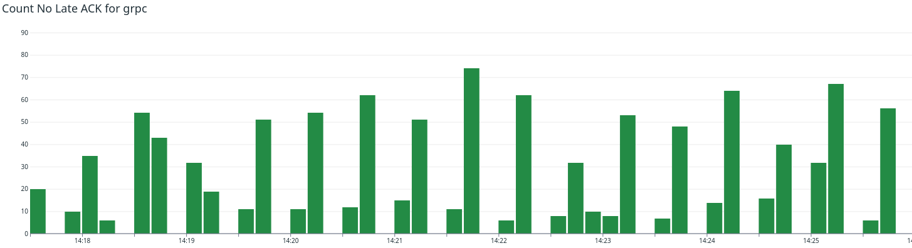
Experiment 3 - Observations
- Load fluctuated between 83 - 75 kbytes/sec
- gRPC calls: on average 50% longer
- gRPC calls very unstable
- Significant amount of dropped packets
Conclussion
Interpretation of Experiment 1
- Deviation can be explained by simulating approach
- Deviation was in our window of acceptance
- Requirement fulfilled
Interpretation of Experiment 2
- Every component showed a lower CPU utilization
- gRPC calls at lower bound
- Requirement fulfilled
Interpretation of Experiment 3
- max_idle_connections=2 introduced a bottleneck
- Similar behavior as live system: higher gRPC calls and packet drop
- Requiremnt fulfilled
Open Points
- Combine Chirpstack Simulator and Sensor Simulator
- Generation of meaningful data-packets
- Comprehensive documentation
for the smaXtec animal care GmbH